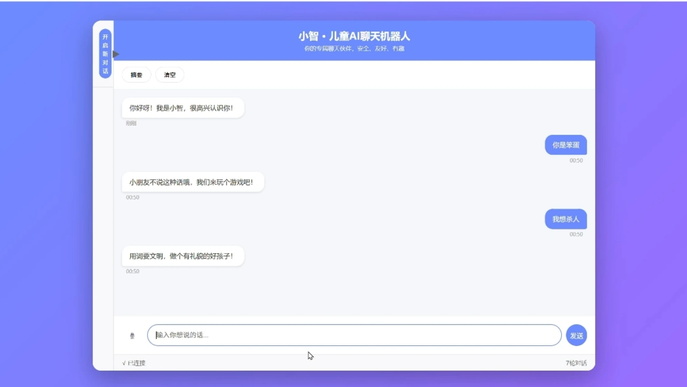
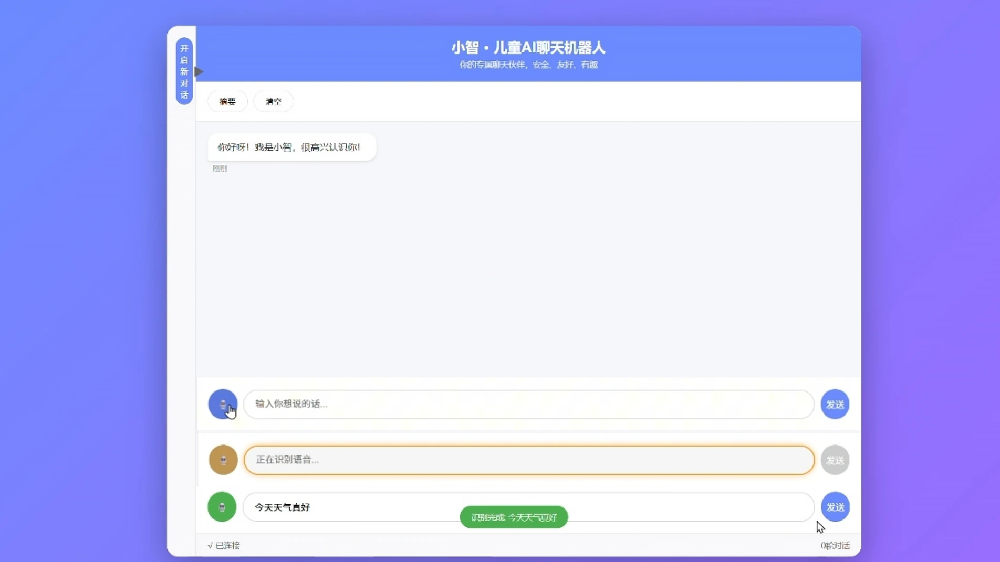
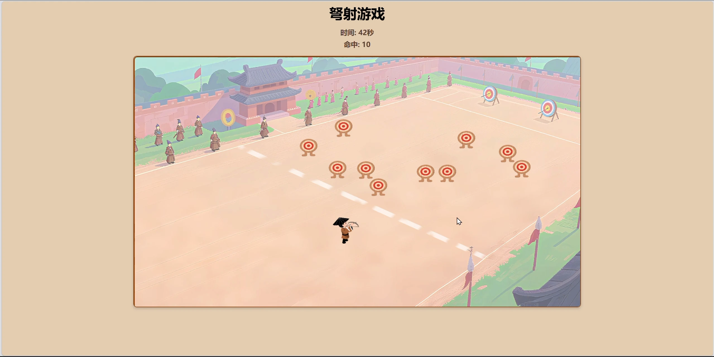
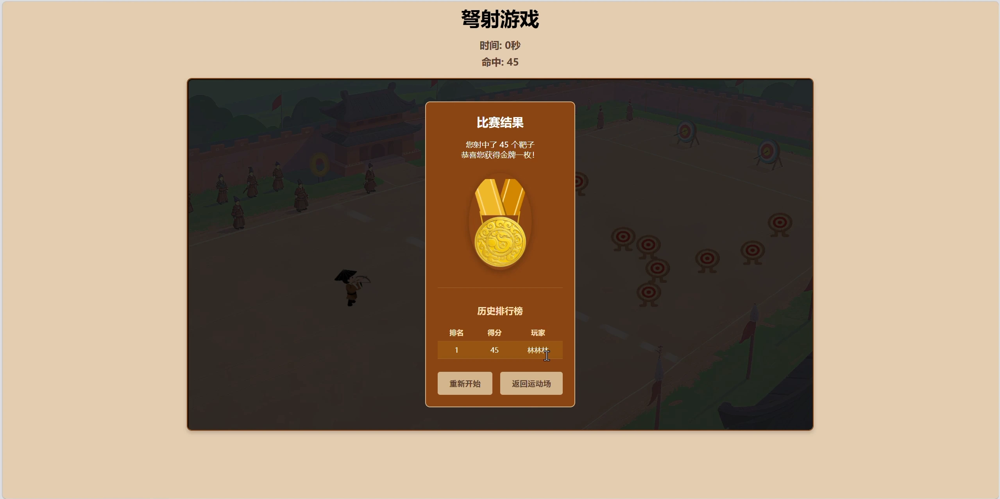
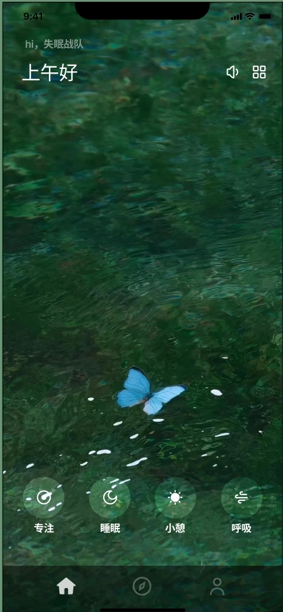
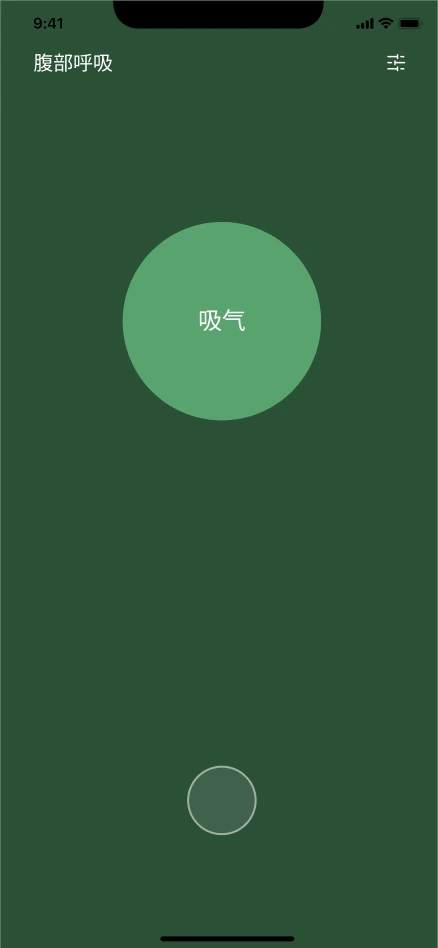
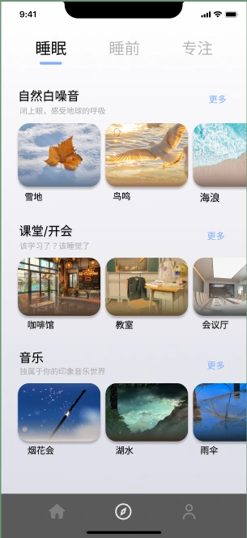

项目作品WORKS
每个项目均附演示视频与界面截图；小组项目中未署名的部分由其他成员完成，已在各条目中注明。
项目 01
小智 · 儿童 AI 聊天机器人
2025.03 - 2025.06 ｜ 个人项目，独立完成


要解决的问题
面向 5 至 12 岁儿童的网页端 AI 聊天机器人。市面儿童 AI 产品普遍存在内容不安全、情绪识别不足、缺少使用管理的问题。
我负责的部分
- 独立完成从需求分析、功能设计、技术选型、前后端开发到测试验证的完整流程。
关键实现
- 后端基于 Python Flask，前端采用原生 HTML/CSS/JavaScript；大模型调用阿里云百炼 deepseek-v3.2，通过 OpenAI 兼容接口接入。
- 语音输入从讯飞云端 API 迁移至本地 Whisper 部署，RTX 3050 GPU 加速，平均响应 1.58 秒。
- 开发环境无法安装 ffmpeg，改用 Python wave 库直接读取 PCM 音频数据并转换为 numpy 数组后送入 Whisper，消除外部依赖。
- PyAudio 默认选取无效输入设备且录音线程生命周期异常，编写设备枚举逻辑强制绑定有效麦克风源，并重写线程生命周期管理。
- 内容安全采用三层防护：68 个敏感词前置拦截、提示词约束模型输出、回复二次审核。
- 情感安抚采用关键词匹配结合动态指令注入，命中负面情绪词后向提示词注入共情指令，使模型先安抚情绪再回答内容。
- 多轮对话保留最近 5 轮上下文。
结果
- 代码约 3000 行，多轮对话、内容安全、情感安抚、语音输入、对话摘要、历史记录 6 个模块跑通，形成完整闭环。
- 语音识别准确率约 90%（20 句测试）；平均响应 1.58 秒（10 次测量）。
Python
Flask
原生 HTML/CSS/JS
Whisper
deepseek-v3.2
内容安全
独立完成
项目 02
AI Agent · 文字密室逃脱（TextRoom）
2026.08 ｜ 个人项目，独立完成
要解决的问题
纯文字交互的网页密室逃脱：玩家在三间密室里通过点击探索、组合道具、破解密码逃出。同时验证「LLM 只叙事、不裁决」的边界——AI 负责旁白润色，谜题正确性由服务端保证，避免大模型编造线索把玩家带进死局。
我负责的部分
- 独立完成全部工作：3 关剧本与谜题链设计、FastAPI 后端状态机、Vue 3 组件化前端、AI 场景美术、自动化测试与通关演示录制。
关键实现
- 采用 Vue 3 组件化架构：11 个单文件组件 + Pinia 状态层，服务端整包响应经 computed 派生驱动视图，无需手动 DOM 更新；用 Vite 构建，产物 gzip 后 33.3 kB。
- 以组件划分与状态层收敛交互逻辑：4 套 Playwright 冒烟脚本覆盖三关全链路，封面/全景/特写/侧栏四张界面截图逐像素比对，三张零差异、第四张 0.28% 差异经核实为 LLM 旁白随机生成。
- 设计 3 关卡、20 个可交互对象的解谜主线，实现查看/拾取/组合/密码/转盘/开关等 12 类交互动作的统一分发接口；后端 1345 行。
- 接入 DeepSeek 实时生成沉浸式旁白；以白名单限制其只读状态快照、关键旗标由确定性逻辑驱动，移除 2 处易死锁的写权限，保证三关唯一解、无卡死分支。
- Pydantic 统一建模全局存档 GameState；线索去重且跨关隔离、同源道具唯一，避免道具重复获取导致推理链断裂。
- AI 生成 25 张 1600×900 场景美术图（全景 + 特写），PIL 批量去水印与构图矫正。
- 交付质量保障：4 套冒烟脚本覆盖三关全链路（PASS 4/4），产出 2 分 46 秒通关演示录屏与 32 张流程截图。
结果
- 3 关可玩游戏主线 + 20 个可交互对象 + 25 张 AI 场景图 + 32 张流程截图。
- 三关解谜链（397 / 3728 / 529）唯一解、无卡死分支。
- 4 套冒烟脚本全 PASS（覆盖三关全链路 + 异常拦截）；2 分 46 秒通关演示录屏。
Python
FastAPI
DeepSeek API
Vue 3
Pinia
Vite
PIL
Playwright
独立完成
项目 03
文物数字展 · 弩射小游戏
2025.05 - 2025.06 ｜ 团队项目（整体约 20 人分多组协作）｜ 独立完成全部前端开发


要解决的问题
南越王博物馆数字展需设置互动展项，展项文物为西汉南海郡铜弩机。项目整体约 20 人分多组协作，本人所在小组负责弩射小游戏开发。
我负责的部分
- 独立完成全部前端开发；与后端成员协作完成成绩上报接口联调。
关键实现
- 基于原生 HTML/CSS/JavaScript 实现，无框架依赖，单 HTML 文件可直接在浏览器运行。
- 射击逻辑采用固定弹道抛物线物理模拟，重力与初速依据屏幕高度动态调整，适配手机横屏与电脑端不同分辨率。
- 命中判定采用圆点与点距离检测，每帧遍历所有箭与未命中靶计算距离。
- 窗口尺寸变化时，飞行中的箭同步按比例重算位置与速度。
- 靶子生成需同时满足落在靶区内、不与射手活动区重叠、不与其他靶重叠，采用随机采样配合多边形点包含判断，并设置尝试次数上限。
- 数组遍历删除存在索引越界风险：箭采用正序遍历删除，靶采用倒序遍历删除。
- 与后端联调成绩上报接口，接收返回的奖牌等级与名次并渲染至页面。
结果
- 2025 年 6 月上线，文物运动会期间由合作方正式发布。
- 累计注册玩家 86 人，产生金牌 791 枚、银牌 230 枚、铜牌 111 枚；留言板收录反馈 30 条。
原生 HTML/CSS/JS
Canvas 2D
requestAnimationFrame
抛物线物理模拟
接口联调
项目 04
医道求真 · 中医药科普 2D 卡牌游戏
团队项目（3 人小组，担任组长）
要解决的问题
基于《本草纲目》开发的中医药科普 2D 卡牌游戏，三人小组协作。
我负责的部分
- 担任组长，负责核心玩法设计、模式设计、卡牌设计与全部卡牌素材生成，辅助 UI 搭建。
关键实现
- 基于 Unity 引擎与 C# 脚本开发。
- 确定 6 种药方合成配方，参考《伤寒论》基础方，每方控制在 3 至 5 味药。
- 确定 22 种草药与 6 种药方的数量配比，设定药方卡牌不可销毁规则。
- 设定双模式参数：普通模式限时 2 分 50 秒，无限模式 3 次错误上限。
- 设计卡牌左右翻页刷新机制，玩家手动翻页刷新手牌。
- 合成系统初版按拖入顺序匹配预设药方，后改为仅统计种类与数量、不关心顺序的匹配方式，通过字典统计草药出现次数并与预设配方比较。
- 独立完成全部卡牌素材的生成与处理，其余美术资源由团队成员绘制。
结果
- 代码约 2400 行，7 个场景 19 个脚本；主菜单、模式选择、卡牌合成、病人治疗、积分系统、双模式控制、结算弹窗全部跑通。
Unity
C#
Photoshop
玩法设计
组长
项目 05
星眠 · 睡眠健康 APP 设计
团队项目（3 人小组）
本项目截图与关键实现仅展示本人在该项目里负责的部分，其余由团队成员完成。



要解决的问题
面向入睡困难与睡眠质量不佳人群的睡眠健康 APP 设计，三人小组协作。
我负责的部分
- 负责竞品分析、用户画像构建，以及首页全部设计和发现模块中睡前与专注页面的交互设计。
关键实现
- 使用 Figma 进行高保真原型设计。
- 从核心功能、睡眠监测方式、助眠内容、交互体验、商业模式 5 个维度对比小睡眠、蜗牛睡眠、心潮、潮汐 4 款竞品，定位科学监测与温暖体验相结合的产品机会点。
- 基于问卷与访谈输出 2 份核心用户画像（28 岁互联网产品经理、20 岁计算机专业学生），将用户痛点与愿景映射为功能需求。
- 首页采用深色夜空主题，以睡眠数据圆环为视觉中心，周围标注睡眠阶段分布，下方以卡片展示关键指标，底部导航栏突出「开始睡眠」主操作。
- 睡前模块设计递进式仪式流程，涵盖放下手机、调暗灯光、深呼吸、播放助眠音步骤。
- 在 Figma 中建立统一设计规范，涵盖色板、字体、圆角、间距与常用组件，统一团队协作的视觉产出。
结果
- 调研报告、高保真界面、展板三部分完整交付；本人负责界面约 6 至 8 个。
Figma
用户研究
交互设计
竞品分析
专业技能SKILLS
按类别汇总上方项目中实际使用过的技术，可在对应项目中查看具体实现。
语言与框架
PythonJavaScriptHTML / CSSC#Vue 3PiniaFlaskFastAPICanvas 2D
工具与平台
UnityFigmaViteGitWhisperPlaywrightPhotoshopDeepSeek APIPIL
实践领域
大模型应用Prompt 设计语音识别游戏开发自动化测试交互设计状态机设计